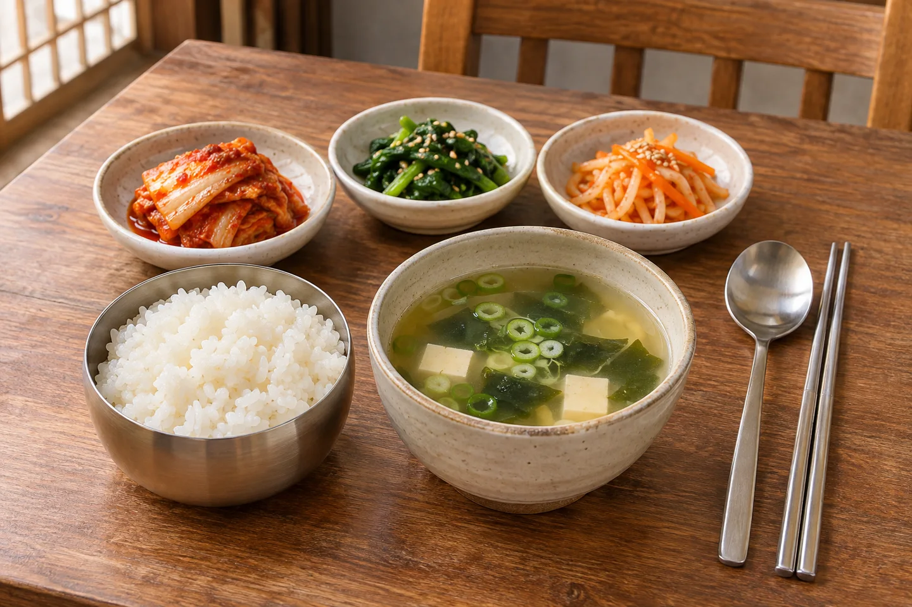
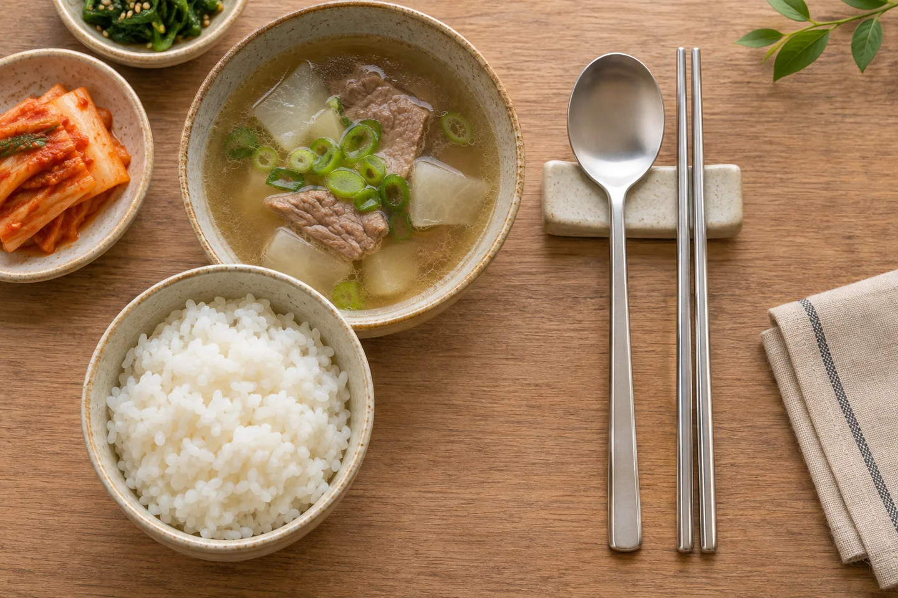
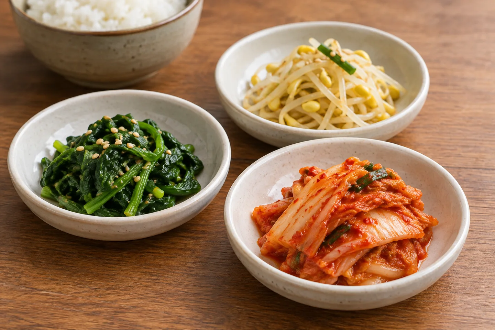
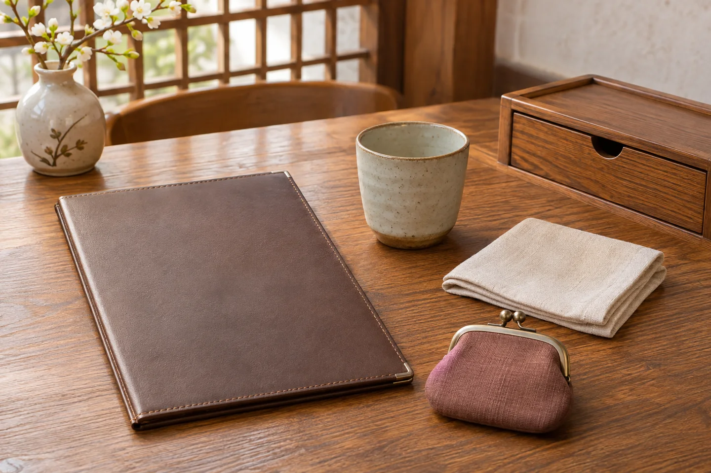

A new table setting can be part of the pleasure of traveling. These notes introduce a few common arrangements and courtesies. They are travel information, not an account of a personal restaurant visit.
Start with the whole table.

Rice, soup, kimchi and other small dishes are a familiar starting point for a Korean baekban meal. The small dishes are called banchan. Look at the meal as a group of things to eat together, rather than expecting one large plate to arrive on its own. The exact dishes and portions depend on what you order.
Before ordering, ask what the set includes and whether a dish is for one person or for sharing. The illustration is an example, not a menu or a promised serving.
The spoon belongs here too.

Korea Tourism Organization highlights the spoon’s everyday role in eating rice and soup. You do not need to manage every mouthful with chopsticks. Put the utensil you are not using down neatly.
Visit Seoul advises keeping spoons and chopsticks out of an upright position in rice, and returning them to their original place after eating. When dining with older companions in a traditional setting, wait for the eldest to begin. Follow your hosts’ lead without turning the meal into a performance.
Notice the small dishes.

Banchan brings different textures and seasonings to the table. A little of one dish alongside rice can feel quite different from eating it alone. Take manageable amounts and ask if you are unsure what something is.
Some restaurants offer self-service water and side dishes; others have staff bring them. Look for the restaurant’s own signs or ask before helping yourself. Confirm which refills are included rather than assuming every extra menu item is free.
A few small questions help.

You may find utensils in a drawer at the side of the table, or a call button for service. These features are common examples, not something every restaurant has. If you cannot find what you need, a polite question is enough.
Tipping is not generally customary in Korea. Follow the restaurant’s payment instructions and check the bill. “Gamsahamnida” (감사합니다) means “thank you”—a simple way to end the meal.
Sources & a practical note
Official visitor guidance checked November 14, 2026. The VISITKOREA page carries a March 24, 2023 update notice; restaurant service and menu arrangements vary. Use the venue’s current information for prices and ordering. All four images are AI-generated explanatory illustrations.